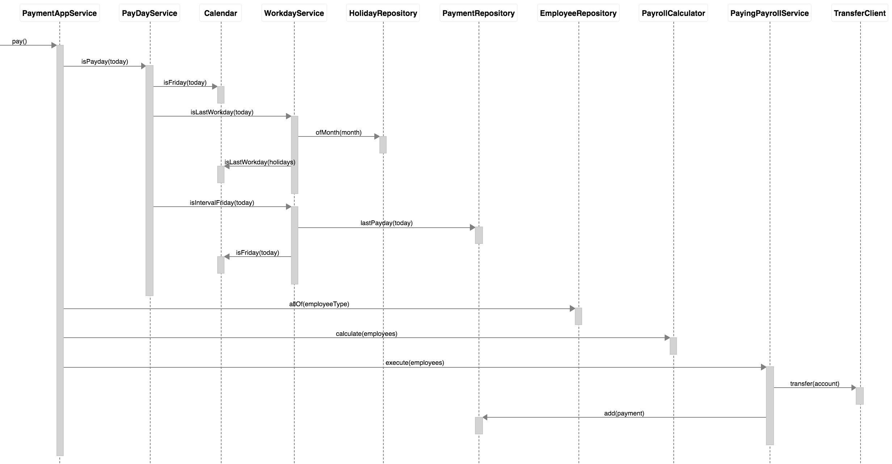
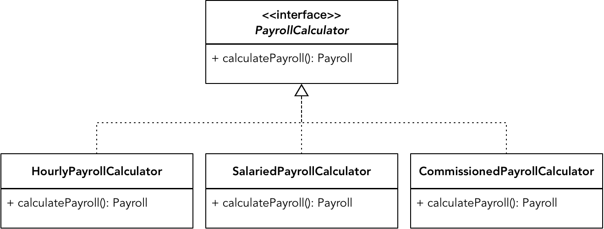

- 001 「战略篇」访谈 DDD 和微服务是什么关系？.md.html
- 002 「战略篇」开篇词：领域驱动设计，重焕青春的设计经典.md.html
- 003 领域驱动设计概览.md.html
- 004 深入分析软件的复杂度.md.html
- 005 控制软件复杂度的原则.md.html
- 006 领域驱动设计对软件复杂度的应对（上）.md.html
- 007 领域驱动设计对软件复杂度的应对（下）.md.html
- 008 软件开发团队的沟通与协作.md.html
- 009 运用领域场景分析提炼领域知识（上）.md.html
- 010 运用领域场景分析提炼领域知识（下）.md.html
- 011 建立统一语言.md.html
- 012 理解限界上下文.md.html
- 013 限界上下文的控制力（上）.md.html
- 014 限界上下文的控制力（下）.md.html
- 015 识别限界上下文（上）.md.html
- 016 识别限界上下文（下）.md.html
- 017 理解上下文映射.md.html
- 018 上下文映射的团队协作模式.md.html
- 019 上下文映射的通信集成模式.md.html
- 020 辨别限界上下文的协作关系（上）.md.html
- 021 辨别限界上下文的协作关系（下）.md.html
- 022 认识分层架构.md.html
- 023 分层架构的演化.md.html
- 024 领域驱动架构的演进.md.html
- 025 案例 层次的职责与协作关系（图文篇）.md.html
- 026 限界上下文与架构.md.html
- 027 限界上下文对架构的影响.md.html
- 028 领域驱动设计的代码模型.md.html
- 029 代码模型的架构决策.md.html
- 030 实践 先启阶段的需求分析.md.html
- 031 实践 先启阶段的领域场景分析（上）.md.html
- 032 实践 先启阶段的领域场景分析（下）.md.html
- 033 实践 识别限界上下文.md.html
- 034 实践 确定限界上下文的协作关系.md.html
- 035 实践 EAS 的整体架构.md.html
- 036 「战术篇」访谈：DDD 能帮开发团队提高设计水平吗？.md.html
- 037 「战术篇」开篇词：领域驱动设计的不确定性.md.html
- 038 什么是模型.md.html
- 039 数据分析模型.md.html
- 040 数据设计模型.md.html
- 041 数据模型与对象模型.md.html
- 042 数据实现模型.md.html
- 043 案例 培训管理系统.md.html
- 044 服务资源模型.md.html
- 045 服务行为模型.md.html
- 046 服务设计模型.md.html
- 047 领域模型驱动设计.md.html
- 048 领域实现模型.md.html
- 049 理解领域模型.md.html
- 050 领域模型与结构范式.md.html
- 051 领域模型与对象范式（上）.md.html
- 052 领域模型与对象范式（中）.md.html
- 053 领域模型与对象范式（下）.md.html
- 054 领域模型与函数范式.md.html
- 055 领域驱动分层架构与对象模型.md.html
- 056 统一语言与领域分析模型.md.html
- 057 精炼领域分析模型.md.html
- 058 彩色 UML 与彩色建模.md.html
- 059 四色建模法.md.html
- 060 案例 订单核心流程的四色建模.md.html
- 061 事件风暴与业务全景探索.md.html
- 062 事件风暴与领域分析建模.md.html
- 063 案例 订单核心流程的事件风暴.md.html
- 064 表达领域设计模型.md.html
- 065 实体.md.html
- 066 值对象.md.html
- 067 对象图与聚合.md.html
- 068 聚合设计原则.md.html
- 069 聚合之间的关系.md.html
- 070 聚合的设计过程.md.html
- 071 案例 培训领域模型的聚合设计.md.html
- 072 领域模型对象的生命周期-工厂.md.html
- 073 领域模型对象的生命周期-资源库.md.html
- 074 领域服务.md.html
- 075 案例 领域设计模型的价值.md.html
- 076 应用服务.md.html
- 077 场景的设计驱动力.md.html
- 078 案例 薪资管理系统的场景驱动设计.md.html
- 079 场景驱动设计与 DCI 模式.md.html
- 080 领域事件.md.html
- 081 发布者—订阅者模式.md.html
- 082 事件溯源模式.md.html
- 083 测试优先的领域实现建模.md.html
- 084 深入理解简单设计.md.html
- 085 案例 薪资管理系统的测试驱动开发（上）.md.html
- 086 案例 薪资管理系统的测试驱动开发（下）.md.html
- 087 对象关系映射（上）.md.html
- 088 对象关系映射（下）.md.html
- 089 领域模型与数据模型.md.html
- 090 领域驱动设计对持久化的影响.md.html
- 091 领域驱动设计体系.md.html
- 092 子领域与限界上下文.md.html
- 093 限界上下文的边界与协作.md.html
- 094 限界上下文之间的分布式通信.md.html
- 095 命令查询职责分离.md.html
- 096 分布式柔性事务.md.html
- 097 设计概念的统一语言.md.html
- 098 模型对象.md.html
- 099 领域驱动设计参考过程模型.md.html
- 100 领域驱动设计的精髓.md.html
- 101 实践 员工上下文的领域建模.md.html
- 102 实践 考勤上下文的领域建模.md.html
- 103 实践 项目上下文的领域建模.md.html
- 104 实践 培训上下文的业务需求.md.html
- 105 实践 培训上下文的领域分析建模.md.html
- 106 实践 培训上下文的领域设计建模.md.html
- 107 实践 培训上下文的领域实现建模.md.html
- 108 实践 EAS 系统的代码模型.md.html
- 109 后记：如何学习领域驱动设计.md.html
078 案例 薪资管理系统的场景驱动设计
场景驱动设计的起点是领域场景，它不一定需要与事件风暴结合，只要识别并确定了领域场景，就可以进行任务分解。每个分解出来的子任务都可以视为是职责。分配职责时，场景驱动设计规定了履行职责的角色构造型，其中，履行领域行为职责的对象是领域服务和聚合。场景驱动设计利用任务分解是为了匹配设计者的思维方式，利用角色构造型分配职责则是为了降低对象设计的难度，同时还能避免过程式设计的“上帝类”，保证对象的良好协作。
我在讲解函数范式时，借用了 Robert Martin 在《敏捷软件开发》一书给出的薪资管理系统。这个系统的需求清晰，领域逻辑存在一定复杂性，适合用来演练如何进行场景驱动设计。让我们再一次阅读该系统的需求：
公司雇员有三种类型。一种雇员是钟点工，系统会按照雇员记录中每小时报酬字段的值对他们进行支付。他们每天会提交工作时间卡，其中记录了日期以及工作小时数。如果他们每天工作超过 8 小时，超过部分会按照正常报酬的 1.5 倍进行支付。支付日期为每周五。月薪制的雇员以月薪进行支付。每个月的最后一个工作日对他们进行支付。在雇员记录中有月薪字段。销售人员会根据他们的销售情况支付一定数量的酬金（Commssion）。他们会提交销售凭条，其中记录了销售的日期和数量。在他们的雇员记录中有一个酬金报酬字段。每隔一周的周五对他们进行支付。
识别场景
使用事件风暴可以帮助我们识别领域场景，但薪资管理系统的业务流程相对比较简单，系统的参与者一目了然，考虑到领域场景与满足用户目标的用例是保持一致的，使用用例图进行场景识别会更适合该系统的需求。
首先识别薪资管理系统的参与者，包括：
- 钟点工
- 月薪雇员
- 销售人员
这些参与者是非常容易识别出来的，它们实际上就是参与这个系统的用户角色。除此之外，不同的雇员类型有着不同的薪资支付日期，在满足支付薪资的条件下自动支付。这相当于事件风暴的策略，在用例中则为非人物角色的系统参与者。
在识别了所有参与者后，根据每个参与者寻找各自参与的用例：
由于月薪雇员在上述需求中并没有参与的活动，因此用例图中未表现该参与者的用例。与参与者之间存在 use 关系的用例，往往代表了它对该参与者而言是有业务价值的，因为它满足了参与者的用户目标。我将这样的用例称之为“主用例”，恰好满足领域场景的定义。
分解任务
我们选择领域逻辑相对复杂的“支付薪资”用例作为驱动设计的领域场景。分解任务时，需要先充分理解该领域场景的详细需求，然后再按照职责的层次依次进行分解。这首先是一个过程式的顺序分解过程，其次才是自上而下的任务分解过程。
支付薪资是系统自动进行的。不同类型雇员的薪资计算方式不同，支付日期也不相同，但却遵循了确定的业务规则。只有满足了支付日期的条件，系统才会进行支付。因此，支付薪资时，要先判断是否支付日期，如果是支付日期，再判断是什么雇员类型的支付日期，并根据条件读取雇员的相关信息，对薪资进行计算。故而分解的任务为：
- 确定是否支付日期
- 获取雇员信息
- 计算雇员薪资
- 支付
只要理清楚了业务需求，弄明白了需求流程的执行过程，要完成这样过程式的任务分解是比较容易的。接下来，需要针对分解的每个任务尝试做进一步的分解，这是一个自上而下的分解过程，可以结合业务需求与实现方案来深入分析。例如对于“确定是否支付日期”任务，按照业务需求的规定，存在三种不同的支付日期：
- 是否为周五：钟点工的支付日期
- 是否为每月的最后一个工作日：月薪雇员的支付日期
- 是否间隔一周的周五：销售人员的支付日期
如果要确定工作日，就需要确定一年之中正常放假的假期设置信息。要确定是否为间隔一周的周五，就需要知道上一次支付的日期。如此分解出来的任务层次为：
- 确定是否支付日期
- 确定是否为周五
- 确定是否为月末工作日
- 获取当月的假期信息
- 确定当月的最后一个工作日
- 确定是否为间隔一周周五
- 获取上一次支付销售人员的日期
- 确定是否间隔了一周
采用同样方式分析其他任务。若任务不可分解，即为原子任务，否则就是组合任务。由此获得的任务层次为：
- 确定是否支付日期
- 确定是否为周五
- 确定是否为月末工作日
- 获取当月的假期信息
- 确定当月的最后一个工作日
- 确定是否为间隔一周周五
- 获取上一次销售人员的支付日期
- 确定是否间隔了一周
- 获取雇员信息
- 计算雇员薪资
- 遍历满足条件的雇员信息
- 根据不同雇员类型计算雇员薪资
- 计算钟点工薪资
- 获取雇员工作时间卡
- 根据雇员日薪计算薪资
- 计算月薪雇员薪资
- 计算销售人员薪资
- 获取雇员销售凭条
- 根据酬金规则计算薪资
- 计算钟点工薪资
- 支付
- 向满足条件的雇员账户发起转账
- 生成支付凭条
任务的分解不是一蹴而就的。我们对需求的理解会随着分析、设计到实现的过程逐步清晰而细化，在没有实现为代码时，无论是分析建模还是设计建模，得到的产出物不过都是“想当然耳”。场景驱动设计会通过分配职责与时序图脚本来减少这种不断修改调整的成本。发现之前的任务分解存在偏差，就应该及时调整。
分配职责
参与场景驱动设计的角色构造型包括：应用服务、领域服务、聚合、资源库与网关。在获得了分解的任务后，我们可以直接遵循场景驱动设计提出的固化流程来分配职责。分配职责时，需要确定这些角色构造型的名称。由于任务通常以动宾短语的形式表现，如下简单规则可供参考：
- 领域场景的业务价值作为应用服务名称的参考
- 将组合任务的动作名词化，即为领域服务名称的候选
- 对于没有访问外部资源的原子任务，则以宾语作为聚合名称的候选
- 资源库的名称与聚合对应
- 若需要调用第三方服务，则网关名以“服务名称 + Client”命名
分配职责时，没有必要再去做冗长的文字功夫，可以利用 ZenUML 提供的时序图脚本语言，按照场景驱动设计的过程直接编写任务脚本即可。这种脚本语言以一种伪代码形式表现对象之间执行的时序、层次和协作关系。如下时序图脚本表现了第一个组合任务的执行时序：
PaymentAppService.pay() {
PayDayService.isPayday(today) {
Calendar.isFriday(today);
WorkdayService.isLastWorkday(today) {
HolidayRepository.ofMonth(month);
Calendar.isLastWorkday(holidays);
}
WorkdayService.isIntervalFriday(today) {
PaymentRepository.lastPayday(today);
Calendar.isFriday(today);
}
}
}
注意区分 PayDayService 和 WorkdayService 的命名，它们代表了不同层级的业务目标。在“确定是否支付日期”任务这一级，业务目标为“确定是否为支付日”，故而命名为 PayDayService；在“确定是否为月末工作日”与“确定是否为间隔一周周五”任务这一级，业务目标为“确定是否为正确的工作日”，故而命名为 WordDayService。
分配职责时，履行主要职责的 Calendar 并非聚合对象。这算是角色构造型中的一个例外，因为对工作日与星期五的判断更像是一个辅助方法，了解这些知识的只能是 Calendar 这样的日历对象。识别这样的对象是有意义的，它的引入保证了领域服务的单一职责，形成了良好的行为协作。根据以上 ZenUML 脚本生成的时序图能够更加直观地表现这样的协作方式：
显然，图中的 Calendar 与 WorkdayService 在不同的抽象层次进行协作，但它们又都封装在 PayDayService 领域服务中。两个资源库也被封装到 WorkdayService 领域服务中。应用服务、领域服务和聚合形成了不同的隔离层次，合理的封装让最外层的应用服务了解更少的知识就能实现支付功能，避免了应用服务乃至应用层的臃肿与职责错位。
继续选择下一个任务。“获取雇员信息”是一个原子任务，它通过访问数据库获得雇员信息，操作的聚合为 Employee，自然应该将该职责分配给 EmployeeRepository。
“计算雇员薪资”是一个嵌套多层的组合任务，但它并没有直接体现业务价值，因而仍然属于“支付薪资”领域场景的一部分。当我们面对相对比较复杂的组合任务时，为避免领域场景的时序图过于复杂，在编写时序图脚本时，可以仅考虑履行最高一层组合任务职责的领域服务，即 PayrollCalculator。至于“计算雇员薪资”的设计细节，可以单独给出时序图脚本。
“支付”仍然属于组合任务。假设转账服务的实现不属于薪资管理系统的范围之内，则“向满足条件的雇员账户发起转账”就是一个访问第三方服务的原子任务。“生成支付凭条”原子任务直接体现了“支付凭条”这一领域概念。在“获取上一次销售人员的支付日期”原子任务中，其实已经驱动出支付凭条这一领域概念了，因为只有它才知道上一次的支付日期。故而当前的“生成支付凭条”原子任务的职责仍然由 PaymentRepository 来承担。
在隐去了“计算雇员薪资”组合任务的细节之后，整个领域场景的时序图脚本如下所示：
PaymentAppService.pay() {
PayDayService.isPayday(today) {
Calendar.isFriday(today);
WorkdayService.isLastWorkday(today) {
HolidayRepository.ofMonth(month);
Calendar.isLastWorkday(holidays);
}
WorkdayService.isIntervalFriday(today) {
PaymentRepository.lastPayday(today);
Calendar.isFriday(today);
}
}
EmployeeRepository.allOf(employeeType);
PayrollCalculator.calculate(employees);
PayingPayrollService.execute(employees) {
TransferClient.transfer(account);
PaymentRepository.add(payment);
}
}
该脚本生成的时序图如下所示：

如果为这个时序图打上可视化信号标记，会发现由 PaymentAppService 应用服务发出的请求实在太多了，相继包括：
- PayDayService
- EmployeeRepository
- PayrollCalculator
- PayingPayrollService
这说明我们的设计为应用服务引入了不必要的领域逻辑。实现领域场景的应用服务方法只能包含领域服务与横切关注点，与 PaymentAppService 协作的对象不仅有领域服务，还有资源库，且参与协作的领域服务有多个。因此，完全有必要引入一个相对粗粒度的领域服务，用来封装这些对象之间的协作，让应用服务变得更加简单而纯粹。于是，我们引入了一个粗粒度的领域服务 PaymentService，它的作用就是在应用层和领域层之间保持一条明确的界限：
PaymentAppService.pay() {
PaymentService.pay() {
PayDayService.isPayday(today);
EmployeeRepository.allOf(employeeType);
PayrollCalculator.calculate(employees);
PayingPayrollService.execute(employees);
}
现在再来单独处理“计算雇员薪资”组合任务。这个任务的处理相对特殊，我们需要取舍聚合的独立性与算法的多态性。分析该组合任务，若具备面向对象的基础知识，就可以敏锐地觉察到“根据不同雇员类型计算雇员薪资”组合任务表达了薪资计算逻辑的抽象。设计模式中策略模式（Strategy Pattern）的设计意图为“定义一系列的算法，把它们一个个封装起来，并且使它们可相互替换。”不同雇员类型的薪资计算就是不同的算法，为它们建立抽象，就可以隔离薪资计算的具体实现。看起来，这一场景非常适合运用策略模式：

在针对薪资管理系统进行领域设计建模时，我们已经建立了如下的设计模型：
这是一个聚合之间的继承体系。设计模型为每种类型的雇员都建立了一个单独的聚合，它们对应了各自的资源库。之所以要建立各自的聚合，是因为钟点工、月薪雇员和销售人员都有着自己需要维护的概念完整性。例如钟点工需要提交工作时间卡，月薪雇员需要记录考勤记录，销售人员需要提交销售凭条。这实际上是领域驱动设计对面向对象设计带来的影响，通过领域驱动设计的设计要素尤其是聚合，为自由的对象图铐上了一把枷锁。设计模型对 Employee 的继承仅仅是为了重用雇员共同拥有的基础属性，但 HourlyEmployee、SalariedEmployee 和 CommissionedEmployee 这三个聚合却是完全独立的，它们对应的资源库和计算逻辑也就可以独立演化。如此一来，Employee 继承体系并没有体现出多态的价值，但这样也可以避免出现 Martin Fowler 在《重构》中提出的设计坏味道“平行的继承体系”。
我们需要对之前分解的任务做一些调整，对不同类型的雇员分别计算薪资：
- 确定是否支付日期
- 确定是否为周五
- 确定是否为月末工作日
- 获取当月的假期信息
- 确定当月的最后一个工作日
- 确定是否为间隔一周周五
- 获取上一次销售人员的支付日期
- 确定是否间隔了一周
- ~~获取雇员信息~~
- 计算雇员薪资
- 计算钟点工薪资
- 获取钟点工雇员与工作时间卡
- 根据雇员日薪计算薪资
- 计算月薪雇员薪资
- 获取月薪雇员与考勤记录
- 对月薪雇员计算月薪
- 计算销售人员薪资
- 获取销售雇员与销售凭条
- 根据酬金规则计算薪资
- 计算钟点工薪资
- 支付
- 向满足条件的雇员账户发起转账
- 生成支付凭条
调整后的任务更加清晰地体现了薪资计算的执行逻辑，例如去掉了“获取雇员信息”这一任务，并将获取雇员及雇员相关信息的职责放到了薪资计算的组合任务下，使得整个任务分解的层次变得更加合理。由此可以获得“计算雇员薪资”组合任务的时序图脚本：
PayrollCalculator.calculate() {
HourlyEmployeePayrollCalculator.calculate() {
HourlyEmployeeRepository.all();
while (employee -> List<HourlyEmployee>) {
employee.payroll(PayPeriod);
}
}
SalariedEmployeePayrollCalculator.calculate() {
SalariedEmployeeRepository.all();
while (employee -> List<SalariedEmployee>) {
employee.payroll();
}
}
CommissionedEmployeePayrollCalculator.calculate() {
CommissionedEmployeeRepository.all();
while (employee -> List<CommissionedEmployee>) {
employee.payroll(payPeriod);
}
}
}
注意，以下三个任务：
- 获取钟点工雇员与工作时间卡
- 获取月薪雇员与考勤记录
- 获取销售雇员与销售凭条
在时序图脚本中，每个雇员聚合对应的资源库负责获取雇员及雇员的相关信息。我们没有看到诸如 TimeCardRepository、AttendenceRepository 与 SalesReceiptRepository 等资源库，更无须关心如何获得工作时间卡、考勤记录与销售凭条。这就是聚合的价值，因为为了保证雇员的概念完整性，聚合根的资源库在操作聚合时，会获取整个聚合边界内的所有对象。由于聚合根拥有了各自边界的实体和值对象，就可以自给自足地履行薪资计算的职责了。如上述脚本中的 employee.payroll(payPeriod)，即为聚合根的领域行为，这就有效地避免了贫血模型！
由于场景驱动设计还未到代码实现阶段，此时对设计的调整成本较低。时序图或时序图脚本以动态方式理清整个领域场景的执行过程，有助于发现静态的领域设计模型存在的缺陷。在编写时序图脚本时，除了考虑职责分配之外，同时还在思考每个对象的 API 设计，例如方法的名称、输入参数和返回值。决定场景驱动设计质量的关键环节是分解任务。只要任务的分界是合理的，再结合角色构造型进行职责分配，就能在设计时运用更加自然的过程式思维模式，随之获得的设计模型却遵循了面向对象的设计思想。即使从重用性与扩展性方面发现了设计模型的不足，我们也可以很容易对该模型进行改进，又或者在针对领域场景进行测试驱动开发时，通过重构来改进设计与代码的质量。